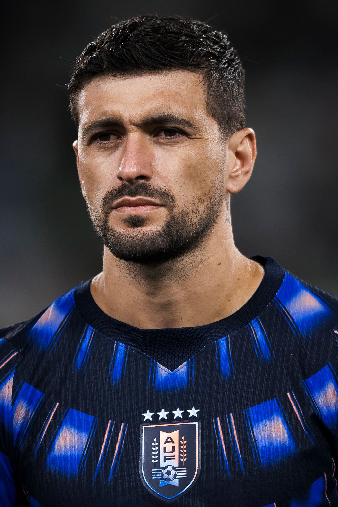

O jogo de abertura será México x África do Sul. Confrontos entre Coreia do Sul e europeus são equilibrados.
Canadá joga em casa. Catar e Suíça já se enfrentaram recentemente.
Brasil nunca perdeu para a Escócia em Copas.

Jogador Atual